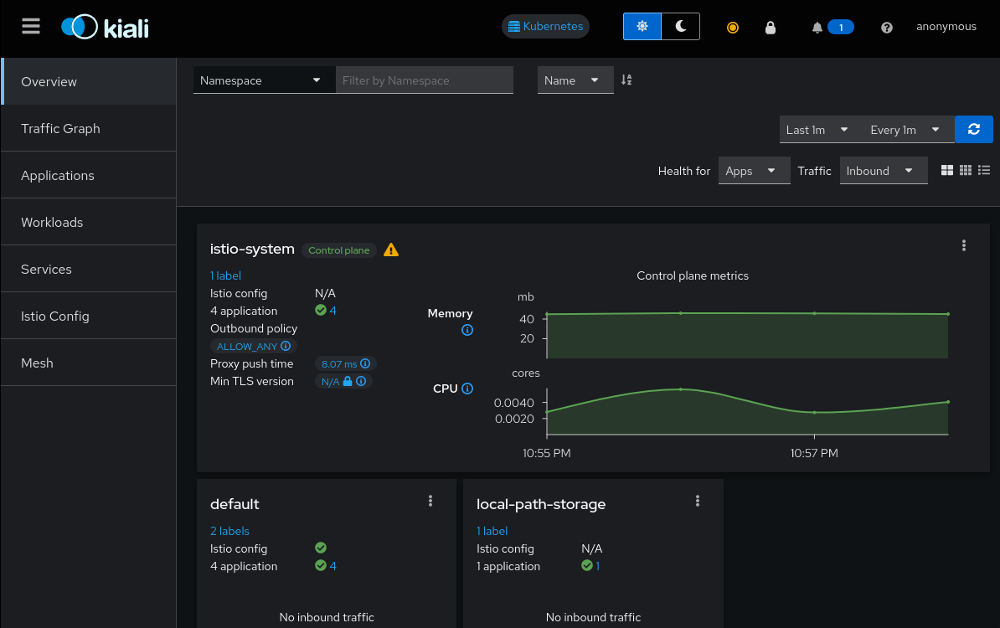
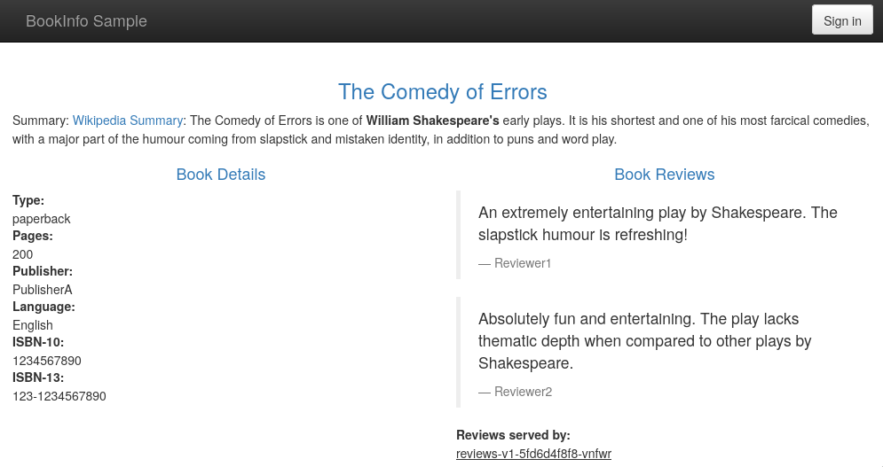
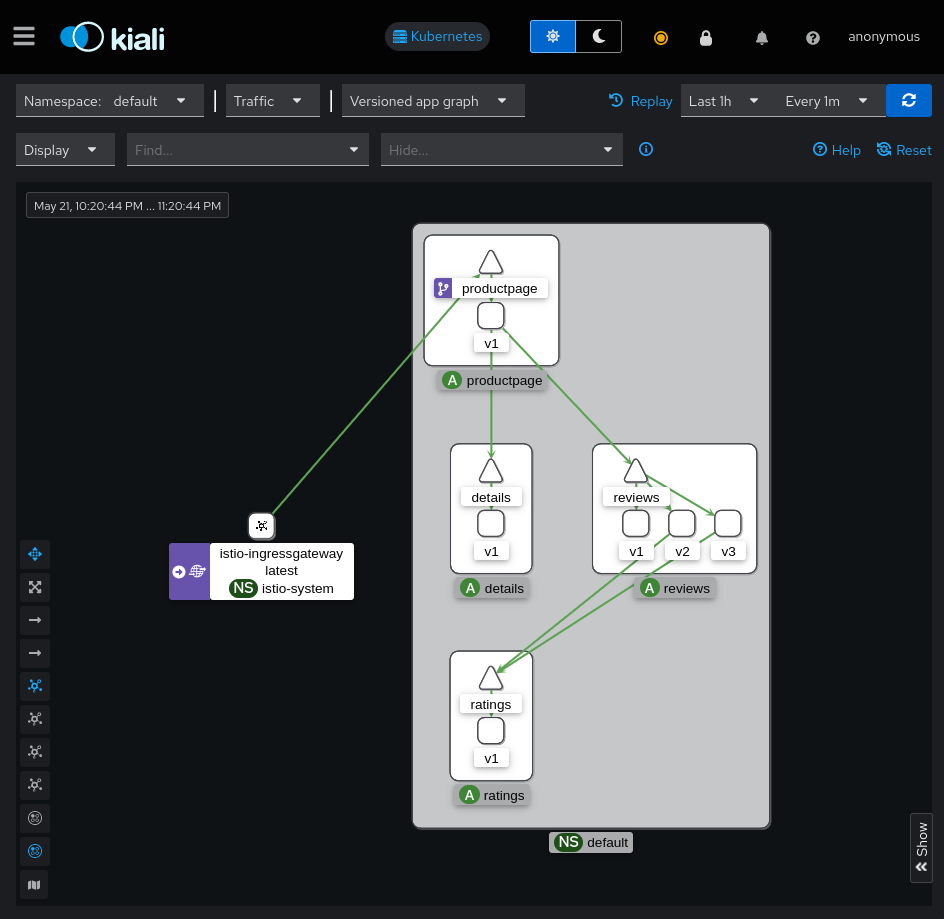
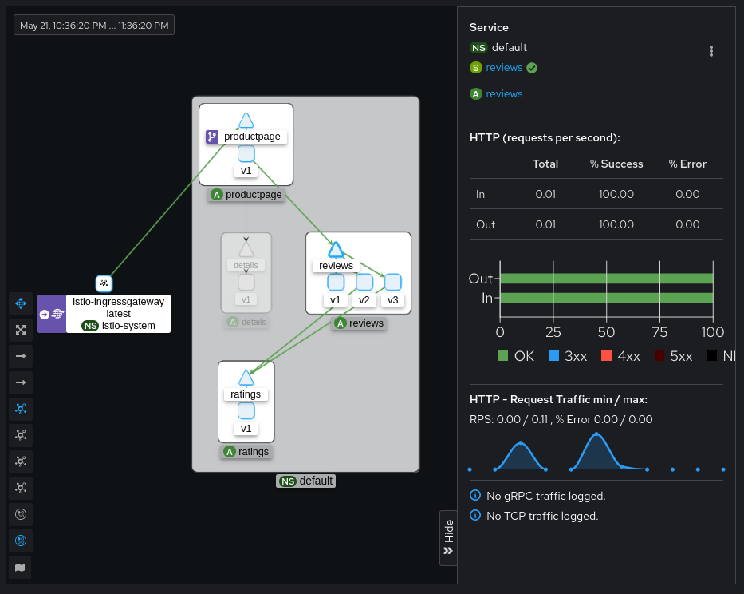
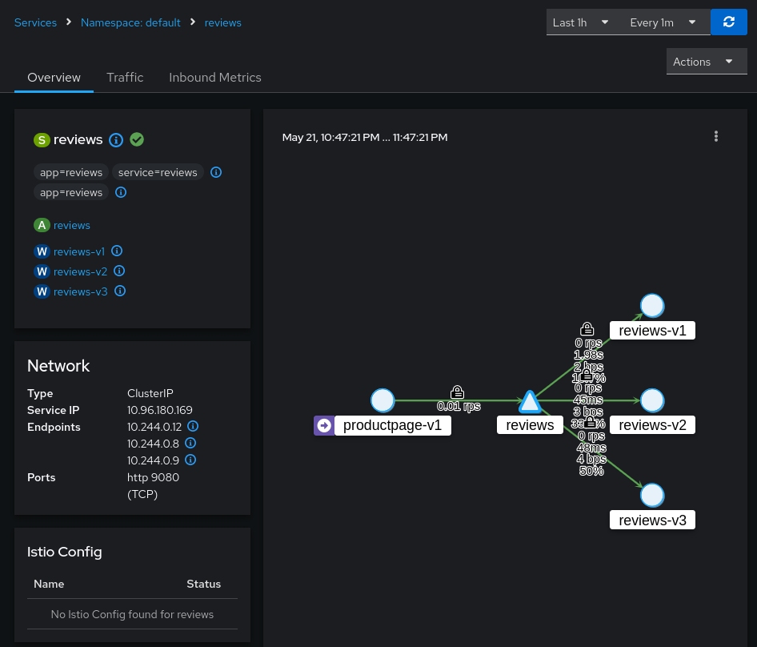
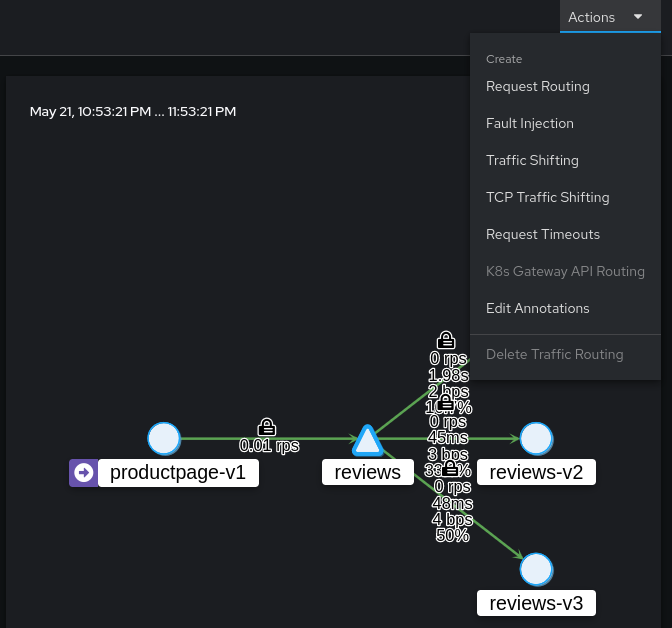
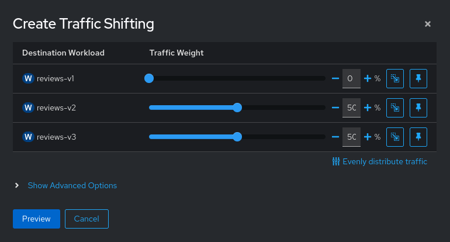
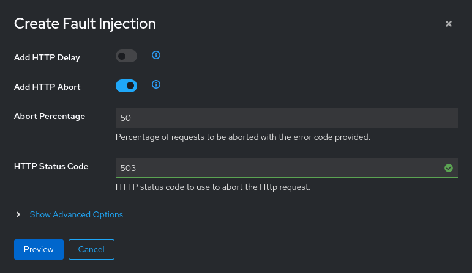
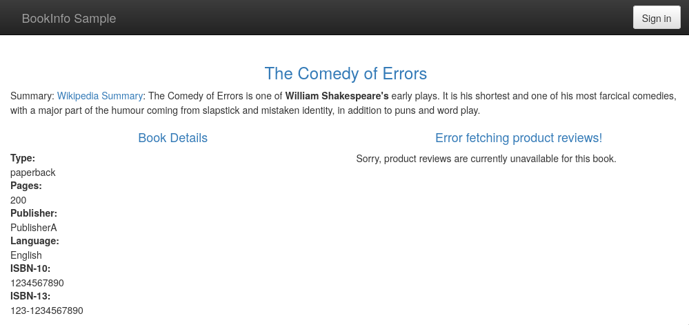

Kiali
Vagrant
Для работы будем использовать следующий Vagrantfile:
Vagrant.configure("2") do |config|
config.vm.define "otel" do |c|
c.vm.provider "virtualbox" do |v|
v.cpus = 2
v.memory = 4096
end
c.vm.box = "ubuntu/lunar64"
c.vm.hostname = "otel"
c.vm.network "forwarded_port", guest: 8080, host: 8888
c.vm.provision "shell", inline: <<-SHELL
apt-get update -q
apt-get install -yq docker.io docker-compose-v2
usermod -a -G docker vagrant
curl -LO https://dl.k8s.io/release/v1.30.0/bin/linux/amd64/kubectl
curl -Lo ./kind https://kind.sigs.k8s.io/dl/v0.22.0/kind-linux-amd64
curl -L https://github.com/istio/istio/releases/download/1.21.2/istioctl-1.21.2-linux-amd64.tar.gz \
| tar xzf - -C /usr/local/bin/
install -m 755 kubectl kind /usr/local/bin/
rm kubectl kind
SHELL
end
end
Данная конфигурация установит на виртуальную машину docker, kubectl и kind, с помощью которых будет производиться развертывание и управление кластером kubernetes, а также утилита istioctl для управления istio.
Install
Создадим новый кластер с помощью утилиты kind передав конфигурацию, в которой
указаны дополнительные порты для доступа снаружи:
cat <<EOF | kind create cluster --config=-
kind: Cluster
apiVersion: kind.x-k8s.io/v1alpha4
nodes:
- role: control-plane
kubeadmConfigPatches:
- |
kind: InitConfiguration
nodeRegistration:
kubeletExtraArgs:
node-labels: "ingress-ready=true"
extraPortMappings:
- containerPort: 8080
hostPort: 8080
protocol: TCP
- containerPort: 8443
hostPort: 8443
protocol: TCP
EOF
И убедимся что он функционирует:
Creating cluster "kind" ...
✓ Ensuring node image (kindest/node:v1.29.2) 🖼
✓ Preparing nodes 📦
✓ Writing configuration 📜
✓ Starting control-plane 🕹️
✓ Installing CNI 🔌
✓ Installing StorageClass 💾
Set kubectl context to "kind-kind"
You can now use your cluster with:
kubectl cluster-info --context kind-kind
Not sure what to do next? 😅 Check out https://kind.sigs.k8s.io/docs/user/quick-start/
$ kubectl cluster-info
Kubernetes control plane is running at https://127.0.0.1:34283
CoreDNS is running at https://127.0.0.1:34283/api/v1/namespaces/kube-system/services/kube-dns:dns/proxy
To further debug and diagnose cluster problems, use 'kubectl cluster-info dump'.
Установим istio с помощью istioctl, добавим метку на неймспейс, чтобы
istio мог инжектить сайдкары, а также внесем изменения в конфигурацию
istio-ingressgateway для доступа снаружи:
$ istioctl install --set profile=demo -y
✔ Istio core installed
✔ Istiod installed
✔ Egress gateways installed
✔ Ingress gateways installed
✔ Installation complete
Made this installation the default for injection and validation.
$ kubectl label namespace default istio-injection=enabled
namespace/default labeled
$ kubectl patch deploy -n istio-system istio-ingressgateway -p '{"spec":{"template":{"spec":{"dnsPolicy":"ClusterFirstWithHostNet","hostNetwork":true}}}}'
deployment.apps/istio-ingressgateway patched
Deploy Kiali
Установим тестовое приложение bookinfo, а также prometheus и kiali:
$ kubectl apply -f https://raw.githubusercontent.com/istio/istio/release-1.21/samples/bookinfo/platform/kube/bookinfo.yaml
service/details created
serviceaccount/bookinfo-details created
deployment.apps/details-v1 created
service/ratings created
serviceaccount/bookinfo-ratings created
deployment.apps/ratings-v1 created
service/reviews created
serviceaccount/bookinfo-reviews created
deployment.apps/reviews-v1 created
deployment.apps/reviews-v2 created
deployment.apps/reviews-v3 created
service/productpage created
serviceaccount/bookinfo-productpage created
deployment.apps/productpage-v1 created
$ kubectl apply -f https://raw.githubusercontent.com/istio/istio/release-1.21/samples/bookinfo/networking/bookinfo-gateway.yaml
gateway.networking.istio.io/bookinfo-gateway created
virtualservice.networking.istio.io/bookinfo created
$ kubectl apply -f https://raw.githubusercontent.com/istio/istio/release-1.22/samples/addons/prometheus.yaml
serviceaccount/prometheus created
configmap/prometheus created
clusterrole.rbac.authorization.k8s.io/prometheus created
clusterrolebinding.rbac.authorization.k8s.io/prometheus created
service/prometheus created
deployment.apps/prometheus created
$ kubectl apply -f https://raw.githubusercontent.com/istio/istio/release-1.22/samples/addons/kiali.yaml
serviceaccount/kiali created
configmap/kiali created
clusterrole.rbac.authorization.k8s.io/kiali-viewer created
clusterrole.rbac.authorization.k8s.io/kiali created
clusterrolebinding.rbac.authorization.k8s.io/kiali created
role.rbac.authorization.k8s.io/kiali-controlplane created
rolebinding.rbac.authorization.k8s.io/kiali-controlplane created
service/kiali created
deployment.apps/kiali created
Для доступа снаружи добавим VirtualService:
kubectl apply -f - <<EOF
apiVersion: networking.istio.io/v1beta1
kind: VirtualService
metadata:
name: kiali
spec:
gateways:
- bookinfo-gateway
hosts:
- kiali.127.0.0.1.nip.io
http:
- route:
- destination:
host: kiali.istio-system.svc.cluster.local
port:
number: 20001
EOF
После чего будет доступен интерфейс kiali по адресу kiali.127.0.0.1.nip.io:8888.

А также демонстрационное приложение bookinfo, которое можно открыть по адресу localhost:8888/productpage.

Graph
Сделаем несколько запросов в тестовое приложение, чтобы появились метрики проходящего трафика. После прохождения трафика на странице Traffic Graph можно увидеть схему взаимодействий между сервисами:

Как видно, трафик заходит через istio-ingressgateway и попадает в сервис
productpage, после чего с данного сервиса отправляются запросы в сервисы
details и reviews, а с сервиса reviews уходит в ratings. Причем
сервис ratings запрашивается только из сервиса reviews с версиями v2 и v3.
Выберем сервис reviews на графе, в правой панели можно увидеть информацию
о трафике прошедшем через данный сервис:

Здесь можно наблюдать количество запросов в секунду, а также http коды ответов.
В интерфейсе kiali можно не только наблюдать за трафиком в istio, но и также производить некоторые изменения.
Traffic Shifting
С помощью kiali можно управлять процентным соотношением трафика между разными группами сервиса, для этого перейдем в конфигурацию сервиса reviews:

Здесь в Actions выберем Traffic Shifting:

И в появившемся меню выставим соотношение по версиям в процентах так, чтобы
на версию v1 трафик не поступал:

Нажмем кнопку Preview в которой отобразятся создаваемые ресурсы istio и
после кнопку Create
Теперь при попытках открытия страницы productpage будет отображаться блок
Book Reviews только версий v2 и v3:
После того, как убедились, что версия v1 не появляется, можем удалить в
интерфейсе kiali данную конфигурацию в меню
Actions - Delete Traffic Routing, после чего снова сможем попадать на v1:
Fault Injection
Для тестирования работы микросервисной системы istio позволяет добавлять
ошибки во взаимодействие между сервисами.
Попробуем добавить ошибку от сервиса reviews, для этого на
странице сервиса выберем Actions - Fault Injection, после чего в появившемся
меню выберем тип ошибки - ответ 503 и процент возникновения - 50:

После чего по кнопке Preview можем наблюдать создаваемые ресурсы istio
и по кнопке Create применим их. Теперь открывая страницу productpage
иногда блок Product Reviews не будет отображаться:

Таким образом можно убедиться насколько система устойчива к сбоям отдельных сервисов.